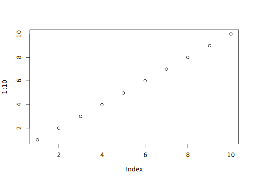

2 Project Management
2.1 How to set up a new support Project
TODO Describe framework and steps to set up a support project incoporating Docker, Github, command line tools, R and Nextflow
2.2 Page setup
How to set up this page?
This page is renderedu using a minimal docker container, so you have to use a specific parameter (dev = "svglite" in the code block definition) to display Cairo graphs.
plot(1:10)
2.3 R workflow using {Targets}
The official Targets documentation can be found here.